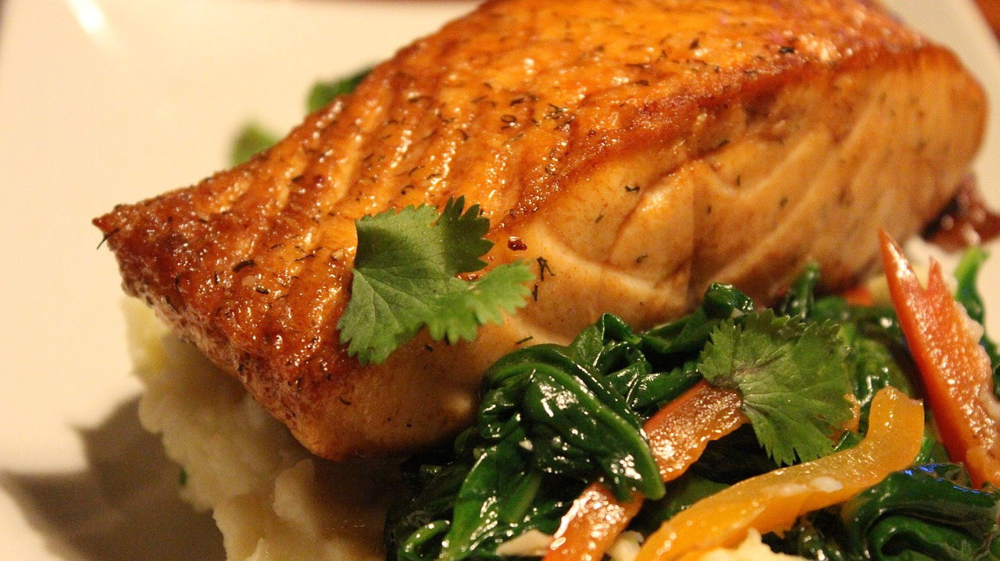

- Begin by selecting the finest cuts of salmon, their flesh firm and luscious, promising a symphony of flavors with every bite. Then, with the precision of a culinary artist, drizzle each fillet with a glaze of pure maple syrup, infusing them with a harmonious blend of sweetness and depth.
- But the magic doesn't stop there. Picture a medley of aromatic herbs and spices, meticulously selected to elevate the salmon's natural richness. Fresh thyme, with its earthy notes, intertwines with pungent garlic and zesty lemon zest, creating a symphony of flavors that dance on the palate.
- As the salmon luxuriates in its marinade, the flavors meld and deepen, promising a culinary experience that transcends the ordinary. Then, with a deft hand, roast the salmon until it reaches a state of golden perfection, the maple syrup caramelizing to create a tantalizing glaze that shimmers in the light.
As you bring the dish to the table, the aroma alone will captivate your senses – a tantalizing blend of sweet maple, savory herbs, and the irresistible allure of perfectly cooked salmon. And with each forkful, you'll discover a treasure trove of flavors – the buttery richness of the fish perfectly complemented by the subtle sweetness of the maple glaze, accented by the aromatic herbs and spices that linger on the palate.
indulge your senses and elevate your dining experience with our maple-roasted salmon dish. Whether shared with loved ones or savored in solitary splendor, each bite promises a journey of culinary bliss that will leave you craving more.
HOME